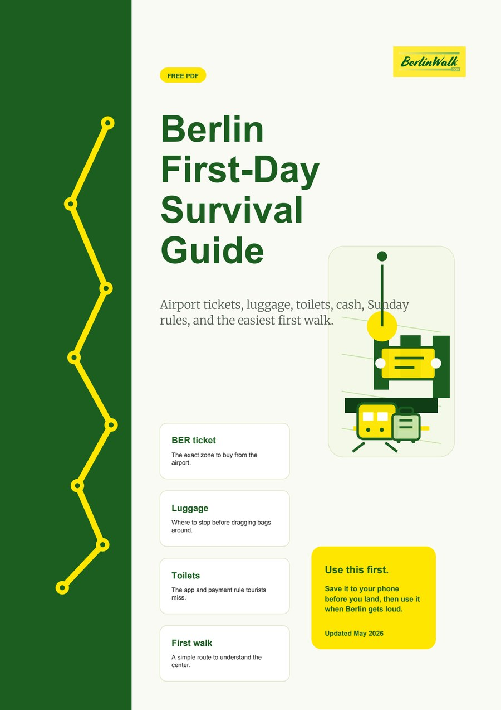

A short local intro before you start reading.
Quick summary
- Validate the right transport ticket before your first ride.
- Plan around Sunday closures, especially shopping and pharmacies.
- Carry some cash, but do not over-withdraw for normal city days.
- Use your first day to understand the center before chasing every landmark.
Berlin is easy to visit once you understand its logic. The trouble is that many visitors arrive with expectations from Paris, London, or Rome, and Berlin behaves differently.
This guide is not here to make the city sound difficult. It is here to remove the small frictions that waste your first day: the ticket machine moment, the closed shop, the confusing museum plan, the long detour that did not need to happen.
Do not buy transport tickets blindly
Berlin transport is excellent, but the ticket names are not always intuitive. Most central city travel uses AB. Airport journeys need ABC. Paper tickets must be validated before the ride, and the fine is far more expensive than the ticket.
Sunday changes the city
Many supermarkets and ordinary shops close on Sundays. Museums, restaurants, cafes, and tourist sights may still be open, but the day has a different rhythm. If you land on a Sunday, plan your first meals and basic supplies before you need them.
Cash still matters, but not everywhere
Berlin is much more card-friendly than it used to be, but cash has not disappeared. Small food places, flea markets, public toilets, and some older neighborhood spots may still prefer or require it. Carry enough for small moments, not a week of anxiety.

Get the Berlin First-Day Survival Guide
A compact PDF for airport arrival, transport tickets, luggage, toilets, Sunday rules, and the first walk through the historic center.
Start with the center, then branch out
Berlin rewards context. If you understand Alexanderplatz, Museum Island, Unter den Linden, and the route toward Hackescher Markt, many later places make more sense. That is why the free walk is built as a story route rather than a checklist.
Turn this guide into a Berlin plan
After reading, the next move should be obvious: walk the city, continue with the most relevant guide, or use a practical tool.
 Berlin Public Transport 2026
Berlin Public Transport 2026
 Public Toilets in Berlin
Public Toilets in Berlin
 Where to Store Luggage
Where to Store Luggage